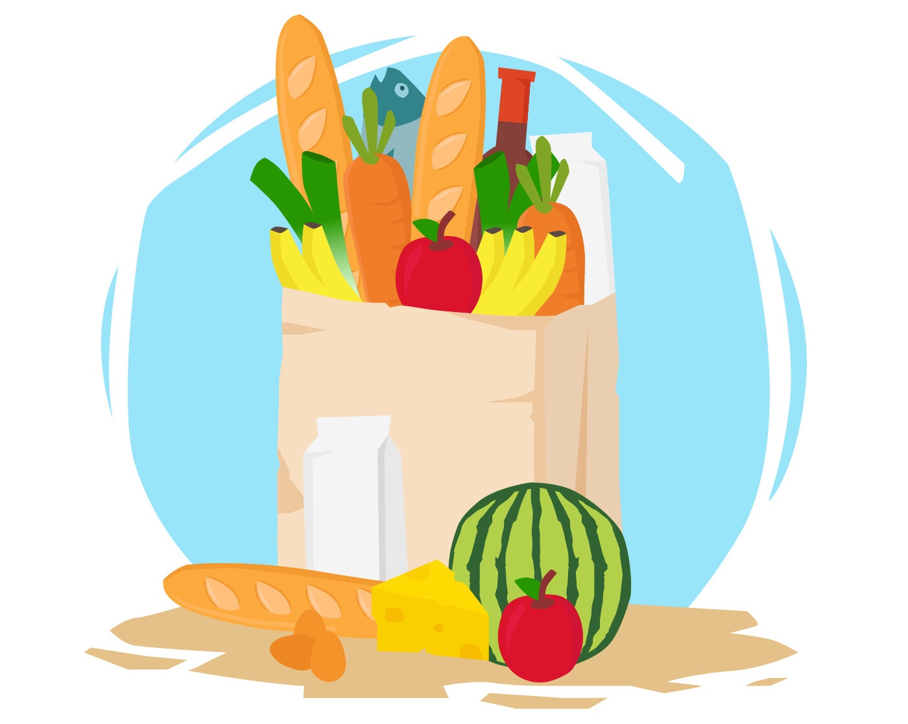

Growfresh
Growfresh dibangun tahun 2020 oleh Anur Al Hadyd, Difa Nur Rofi, Fahmi Ainul Azhar & Syahril Damar Rista sebagai bentuk keprihatinannya terhadap perbedaan jarak harga dari petani kepada para konsumen. Tujuan utama website ini adalah membentuk ekosistem antara petani dan konsumen secara langsung dan diharapkan bisa meningkatkan pendapatan petani. Growfresh masih berupaya membantu para petani untuk bisa menjual produknya hingga ke seluruh kota yang ada di Indonesia. Misinya sederhana, agar para konsumen tidak lagi membeli produk yang diimpor, tetapi cukup dari petani lokal.
Team
Anur Al Hadyd
41819310014
Syahril Damar Rista
41819310010
Difa Nur Rofi
41819310025

Fahmi Ainul Azhar
41819310013
Anur Al Hadyd
41819310014
Syahril Damar Rista
41819310010
Difa Nur Rofi
41819310025
Fahmi Ainul Azhar
41819310013